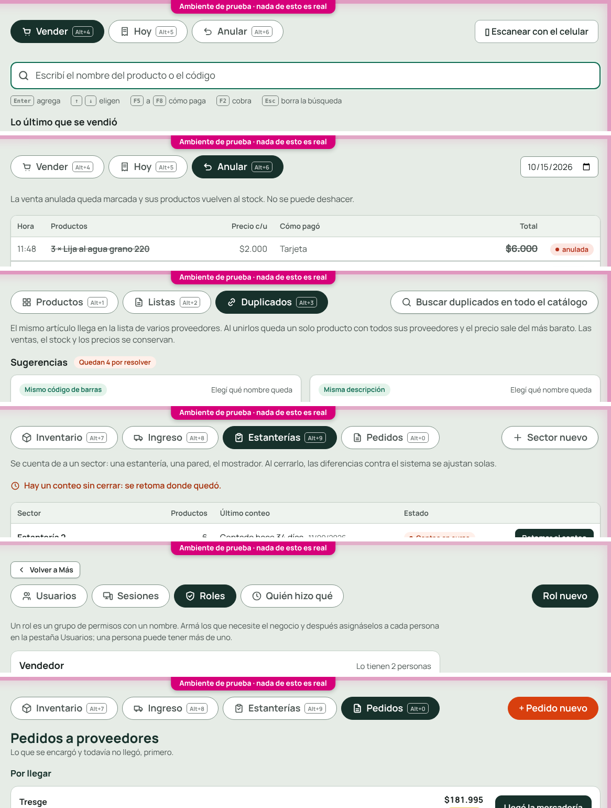
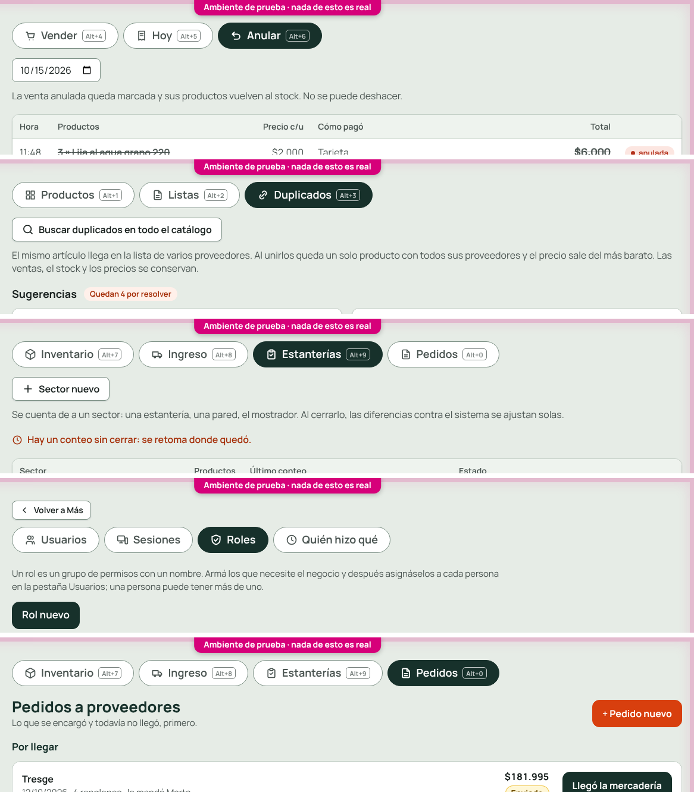

En la computadora: la acción de la pantalla, a la derecha de las pestañas
Pedido de Carlos del 2026-10-15. Nunca hay más de cuatro pestañas, así que a la derecha queda lugar.
- Sube a la fila de las pestañas: «Escanear con el celular» (Vender), el día (Anular), «Sector nuevo» (Estanterías), «Rol nuevo» (Roles) y «Pedido nuevo» (Pedidos).
- No sube: «Buscar duplicados en todo el catálogo» (Duplicados), que es ancha y merece su línea. En la maqueta figura arriba, pero Carlos la dejó afuera.
- Cada botón conserva su estilo: no toma la forma de pestaña.
- En el celular no cambia nada.
Ahora

Antes
